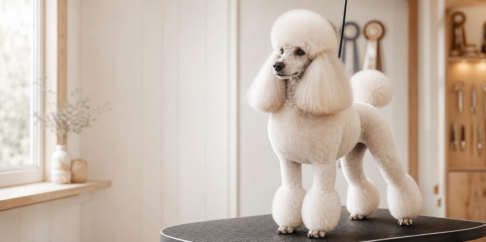

Toy hann
Fidel Face Of A Devil “Bowie”
Oppgitt med Int Nord Ch, PRCD A, patella normal og Toy of the Year i 2018, 2019 og 2020.

Slik går en henvendelse videre
Kennel Fidel beskrev puddel som en rase som krever aktivitet, pelsstell og oppfølging. Derfor er kontaktflyten bygget for å kvalifisere henvendelser, ikke bare samle dem inn.
Beskriv hverdag, erfaring med hund og hvem hunden skal leve sammen med.
Puddel krever jevnlig stell, klipp og en hverdag som faktisk passer rasen.
Kull, ventelister og tjenestetilbud må alltid oppdateres i direkte kontakt.
Arkivmaterialet beskriver videre hjelp med klipp, pelsstell og showveiledning.
Hundene
De små arkivbildene brukes her som bevismateriale rundt konkrete hunder, mens hovedidentiteten bæres av kennelens samlede uttrykk. Det gjør siden mer troverdig enn å strekke gamle bilder til å bære hele førstesiden.
Oppgitt med Int Nord Ch, PRCD A, patella normal og Toy of the Year i 2018, 2019 og 2020.

Knyttet til Crufts-kvalifisering, BIR-resultater og sterk plassering i Sandefjord.

Aprikos hann på 40 cm med HD A-A, kne 0-0, PRCD A og flere BIS SAR-resultater.
Utstilling og dokumentasjon
NKK og Norsk Puddelklubb er viktige fordi de gjør kennelens arbeid etterprøvbart. Her er showsporene brukt som tillit, ikke som pynt.
Fidella Starface ble omtalt som vinner i intermediate class og 2. beste tispe.
Tixobambixo Khamfer of El-Zanz ble BIR SAR og BIS SAR 2, mens Fidella Starface tok juniorresultater.
Brukes her som synlig bevis på aktiv klubb- og ringdeltakelse i kennelens showspor.
Hundeklipp
Arkivmaterialet beskriver klipp for faste, utvalgte kunder og erfaring med klassiske puddelfrisyrer. Derfor ligger hundeklipp her som en egen serviceflate med egen inngang og direkte kontaktmulighet.
Fra lammeklipp til sportskontinental, slik kennelen beskrev det.
Stell forstås som del av kennelmiljøet, ikke som tilfeldig drop-in.
Arkivet knyttet klipp tett til oppfølgingen av kennelens egne valper og hunder.
Menneskene bak
Denne delen samler personene bak Kennel Fidel i én rolig flate, i stedet for å spre kontakt og bakgrunn som små biter gjennom hele siden.
Aktiv med pudler i over 50 år gjennom oppdrett, utstilling og hundefrisering.
Del av kennelen i 34 år og medeier på flere pudler, med tydelig rolle i kennelens drift.
Kontakt
Fortell hva du ønsker kontakt om, hvor du bor, hvordan hundeholdet ser ut og hvor mye pelsstell du ser for deg. Det gjør det lettere å få en god og presis oppfølging.
Oppegård, Akershus
fidelpuddel@gmail.com 997 41 311Bø, Telemark
grstau@online.no 952 82 035